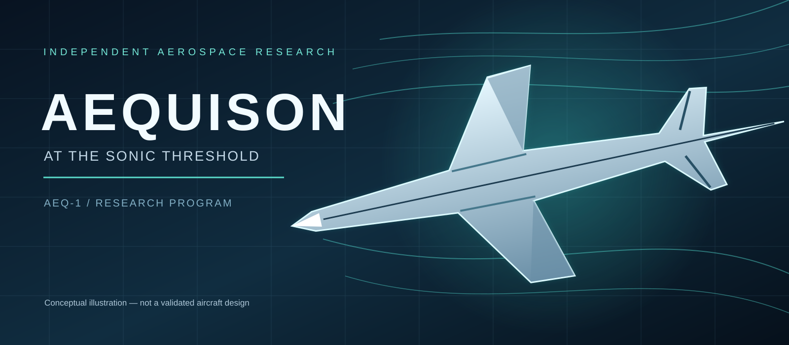
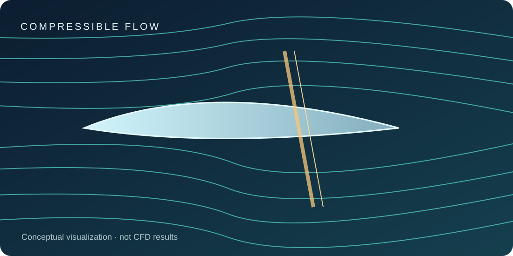
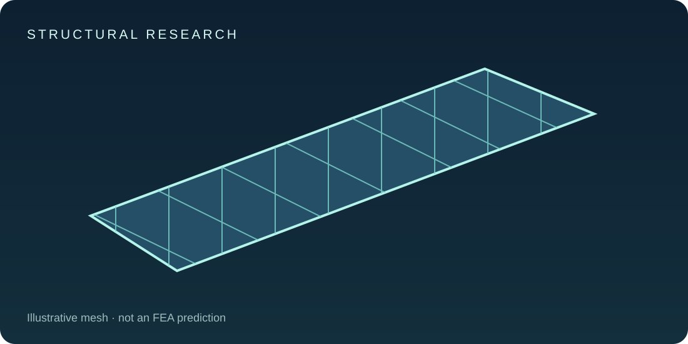
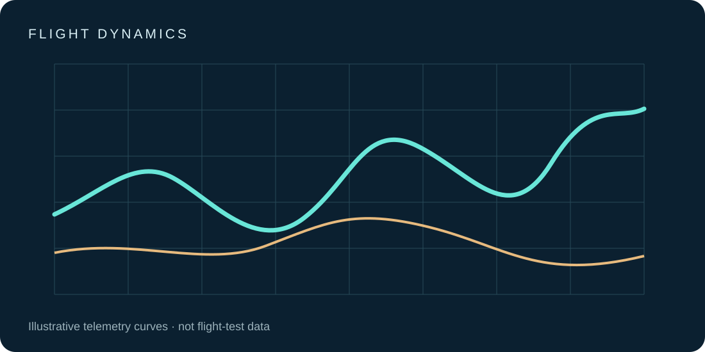

AEQUISON.
At the sonic threshold, every assumption deserves to be tested.
A team-based research and experimental development initiative exploring compressible-flow physics, aircraft structures, validated simulations, and the science of transonic flight.
Research & developmentReproducible engineeringBoom Prize trackExplore our research →
Research first. Competition as a challenge.
AEQUISON is an independent, enduring aerospace research and engineering-development effort. The Boom Prize is a separate competition-compliance track. Our priorities are scientific integrity, documented assumptions, careful model validation, and engineering decisions backed by evidence.
From analysis to evidence.
Atmosphere & flight physics
Reference atmosphere calculations, verification and data interpretation.

Compressible flow
Published CFD benchmark studies, convergence and uncertainty.

Structures & materials
Material properties and independently checked finite-element studies.
Wing architecture
Literature research on fixed and variable-sweep concepts.

Flight dynamics
Subsonic simulation, instrumentation and model validation.
Engineering governance
Requirements traceability, peer review and configuration management.
All graphics are original conceptual illustrations, not actual aircraft designs or measured simulation results.
Documenting every stage of the build.
From formal requirements and numerical validation to laboratory experiments and separately authorized low-speed demonstrations, AEQUISON maintains revision-controlled records of methods, evidence, unexpected results, and decisions. No flight-ready supersonic vehicle or completed build is claimed.
Development lifecycle
Defined phases, independent reviews, and evidence gates.
Read the process →
Subsystem records
Documented research streams for aerodynamics, materials, controls, instrumentation and more.
Browse subsystems →
Experiment and build log
Chronological records that distinguish plans from completed tests.
Open development log →
Considering the Boom Prize.
AEQUISON is researching eligibility and feasibility for the independent amateur supersonic aircraft challenge. No flight authorization, qualification, or endorsement by Boom Supersonic is claimed.
Establishing our baseline.
Initial milestones include source-controlled research and development documentation, graduate-research planning, license verification, atmospheric model checks, and published benchmark reproduction. Planned milestones are not represented as completed flight tests.
View roadmap →